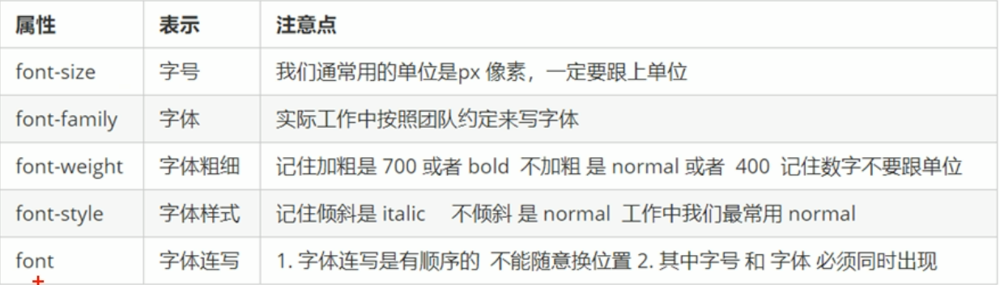
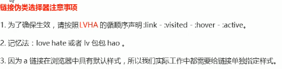
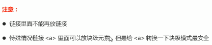
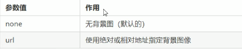
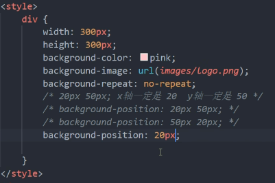

css简介
CSS层叠样式表
1.CSS简介
1.1CSS-网页的 美容师
HTML只关注内容的语义是做结构的呈现，而CSS就是用来美化网页样式的，即结构（HTML）与样式（CSS）分离
CSS是层叠样式表的简称，有时我们也会称之为CSS样式表或级联样式表
CSS也是一种标记语言
CSS主要用于设置HTML页面中的文本内容（字体，大小，对齐方式等），图片的外形（宽高，边框样式，边距等）以及版面的布局和外观显示样式
1.2CSS语法规范
CSS规则有两个主要的部分组成：选择器以及一条或多条声明
- 选择器是用于指定CSS样式的HTML标签，花括号内是对该对象设置的具体样式
- 属性和属性值以“键值对”的形式出现
- 属性是对指定的对象设置的样式属性，例如字体大小，文本颜色等
- 属性和属性值之间用英文的”;”分开
1.3CSS代码风格
样式格式书写
展开格式
1
2
3
4h3 {
color: deeppink;
font-size: 20px;
}样式大小
推荐样式选择器，属性名，属性值关键字全部使用小写字母，特殊情况除外
空格规范
- 属性值前面，冒号后面，保留一个空格
- 选择器（标签）和大括号中间保留一个空格
2.CSS选择器
2.1CSS选择器的作用
选择器（选择符）就是根据不同需求把不同的标签选择出来，这就是选择器的作用，简单来说就是选择标签用的
2.2选择器分类
选择器分为基础选择器和复合选择器两个大类
- 基础选择器是由单个选择器组成的
- 基础选择器又包括：标签选择器，类选择器和通配符选择器
2.3标签选择器
标签选择器（元素选择器）是指用HTML标签名称作为选择器，按标签名称分类，为页面中某一类标签指定统一的css样式
语法：
1 | 标签名 { |
作用：
标签选择器可以把某一类标签全部选择出来，比如所有的<div>标签和所有的<span>
优点：
能快速为页面中的同类型的标签统一设置样式
缺点：
不能设计差异化样式，只能选择全部的当前标签
2.4类选择器
口诀：样式点定义，结构类class调用，一个或多个，开发最常用
可以单独选择其中的一个或某几个标签，可以选择类选择器
语法：
1 | .类名 { |
例如：将所有拥有red类的HTML标签元素均为红色
1 | .red { |
结构需要用class属性来调用class类的意思
1 | <div class='red'>变红色</div> |
注意：
类选择器使用”.”（英文点号）进行标识，后面紧跟类名（自定义，我们自己命名的）
不能用标签名命名
长名称或词组可以使用中横线（-）来分割
尽量不用纯数字，或中文来命名，尽量用英文，并且要有意义，可以让人识别
类命名规范：
2.5类选择器-多类名
多类名使用方法
1 | <div class="red font20">亚瑟</div> |
- 在标签中class属性中写多个类名
- 多个类名中间必须用空格隔开
- 这些类名分别具有这两种样式
2.6id选择器
口诀：样式#定义，结构id调用，只能调用一次，别人切勿使用
id选择器可以为标有特定id的HTML元素指定特定的样式
HTML元素以id属性来设置id选择器，css中id选择器以”#”来定义
语法
1 | #id { |
例如：将id为pink元素中的内容设置为粉红色
1 | #pink { |
调用：
1 | <div id="pink">迈克尔逊</div> |
2.7通配符选择器
在css中，通配符选择器使用”*”定义，它表示选取页面中所有元素（标签）
1 | * { |
通配符选择器不需要调用，自动就给所有的元素使用样式
特殊情况才使用，后面讲解使用场景（以下是清楚所有元素标签的内外边距）
1
2
3
4* {
margin:0;
padding: 0;
}
2.8基础选择器总结
3.CSS字体属性
CSS Fonts（字体）属性用于定义字体系列，大小，粗细和文字样式（如斜体）
3.1字体系列
CSS使用font-family属性定义文本的字体系列
各种字体之间用英文状态下的逗号隔开
一般有多个空格隔开的多个单词组成的字体，加引号
常见字体：
1
body {font-family: Arial,Microsoft YaHei,tahoma,Hiragino Sans GB;}
3.2字体大小
css使用font-size属性定义字体大小
1 | p { |
- px(像素)大小是我们网页的最常用单位
- 可以给body指定整个页面文字的大小
- 标题标签比教特殊，需要单独指定文字大小
3.3字体粗细
CSS使用font-weight属性设置文本文字的粗细
1 | p { |
- 学会让加粗标签（比如h和strong）不加粗，或者让其他标签加粗
- 实际开发中，更喜欢用数字表示粗细
3.4文字样式
css使用font-style属性设置文本的风格
1 | p { |
注意：平时我们很少给文字加斜体，反而要给斜体标签（em，i）改为不倾斜字体
3.5字体的复合属性
字体属性可以把以上文字样式综合来写，这样更节约代码
语法：（不能颠倒顺序）
1 | body { |
- 使用font属性时，必须按上面语法格式中的顺序书写，不能更换顺序，并且各个属性间以空格隔开
- 不需要设置的属性可以省略（取默认值），但必须保留font-size和font-family属性，否则font属性将不起作用
3.6字体属性总结

4.CSS文本属性
CSS Text（文本）属性可定义文本的外观，比如文本的颜色，对齐文本，装饰文本，文本缩进，行间距等
4.1文本颜色
color属性用于定义文本颜色(十六进制最常见)
1 | div { |
4.2对齐文本
text-align属性用于设置元素内文本内容的水平对齐方式
1 | div { |
4.3装饰文本
text-decoration属性规定添加到文本的修饰，可以给文本添加下划线，删除线，上划线等
1 | div { |
4.4文本缩进
text-indent属性用来指定文本的第一行的缩进，通常是将段落的首行缩进
1 | div { |
通过设置该属性，所有元素的第一行都可以缩进一个给定长度，甚至该长度可以是负值
1 | p { |
em是一个相对单位，就是当前元素（font-size）1个文字的大小，如果该元素没有设置大小，则会按照父元素的1个文字的大小
4.5行间距
line-height属性用于设置行间的距离（行高），可以控制文字行与行之间的距离
1 | p { |
4.6文本属性总结
5.CSS引入方式
5.1css的三种样式表
按照css样式书写的位置（或引入的方式），css样式表可以分为三大类：
- 行内样式表（行内式）
- 内部样式表（嵌入式）
- 外部样式表（链接式）
5.2内部样式表（嵌入式）
内部样式表（内嵌样式表）是写到html页面内部，是将所有的css代码抽取出来，单独放到一个<style>标签中
1 | <style> |
<style>标签理论上可以放在HTML文档中的任何地方，但一般会放在文档的<head>标签中- 此种方式可以方便控制当前整个页面中的元素样式设置
- 代码结构清晰，但并没有实现结构与样式完全分离
5.3行内样式表（行内式）
行内样式表（内嵌样式表）是在元素标签内部的style属性中设定css样式，适合修改简单样式
1 | <div style="color: red;font-size:12px;"> |
- style就是标签的属性
- 在双引号中间，写法要符合css规范
- 可以控制当前的标签设置样式
- 过于繁琐，没有实现结构与样式分离
5.4外部样式表（链接式）
样式单独写在css文件中，之后把css文件引入到HTML页面中使用
引入外部样式表分为两步：
- 新建一个后缀名为.css的样式文件，把所有css代码都放入此文件中
- 在HTML页面中，使用
<link>标签引入这个文件(写在<head>中)
1 | <link rel="stylesheet" href="css文件路径"> |
- 使用外部样式表设定css，通常也被称为外链式或链接引入，在开发中最常见
5.5CSS引入方式总结
6.Emmet语法
Emmet语法的前身是Zen coding，它使用缩写来提高html/css的编写速度，Vscode内部已经集成该语法
6.1快速生成HTML结构语法
7.什么是复合选择器
7.1什么是复合选择器
在css中，可以根据选择器的类型把选择器分为基础选择器和复合选择器，复合选择器是建立在基础选择器之上，对基本选择器进行组合形成的
- 复合选择器可以更准确，更高效的选择目标元素（标签）
- 复合选择器由两个或多个基础选择器，通过不同的方式组合而成
- 常用的复合选择器包括：后代选择器，子选择器，并集选择器，伪类选择器等
7.2后代选择器
后代选择器又称包含选择器，可以选择父元素里面子元素，其写法就是把外层标签写在前面，内层标签写在后面，中间用空格隔开，当标签发生嵌套时，内层标签就成为外层标签的后代
1 | 元素1 元素2 {样式声明} |
上述语法表示选择元素1里面的所有元素2（后代元素）
例如：
1 | ul li {样式声明}//选择ul里面的所有li标签元素 |
7.3子选择器
子元素选择器（子选择器）只能选择作为某元素的最近一级子元素
语法：
1 | 元素1>元素2 {样式声明} |
上述语法表示选择元素1里面的所有直接后代（子元素）元素2
7.4并集选择器
并集选择器可以选择多组标签，同时为他们定义相同的样式，通常用于集体声明
并集选择器是各选择器通过英文逗号（,)连接而成，任何形式的选择器都可以作为并集选择器的一部分
语法：
1 | 元素1，元素2 { 元素声明} |
上述语法表示选择元素1和元素2
例如：
1 | ul,div {样式声明}//选择ul和div标签元素 |
7.5伪类选择器
伪类选择器用于向某些选择器添加特殊的效果，其最大的特点是用冒号(:)表示，比如：hover，：first等
伪类选择器有很多，例如有链接伪类，结构伪类等
7.5.1链接伪类选择器
例如：

7.5.2:focus伪类选择器
:focus伪类选择器用于选取获得焦点的表单元格
焦点就是光标，一般情况<input>类表单元素才能获取，因此这个选择器也主要针对于表单元素来说
1 | input:focus { |
7.6复合选择器总结
8.CSS的元素显示模式
8.1什么是元素显示模式
作用：网页标签非常多，在不同地方会用到不同类型的标签，元素显示模式可以更好地布局我们的网页
元素显示模式就是元素（标签）以一种什么方式进行显示，比如<div>独占一行，一行可以放多多个<span>
HTML元素一般分为块元素和行内元素两种类型
8.2块元素
常见的块元素有<h1>-<h6>,<p>,<div>,<ul>,<ol>,<li>等，其中<div>标签是最典型的块元素
8.3行内元素
常见的行内元素有<a>,<strong>,<b>,<em>,<i>,<del>,<s>,<ins>,<u>,<span>等，其中，<span>标签是最典型的行内元素，有的地方也将行内元素成为内联元素

8.4行内块元素
在行内元素中有几个特殊的标签<img>,<input>,<td>,它们同时具有块元素和行内元素的特点，成为行内块元素
8.5元素显示模式总结
8.6元素显示模式转换
特殊情况下，我们需要元素转换模式的转换，简单理解一个模式的元素需要另外一种模式的特性，比如想要增加链接<a>的触发范围
- 转换为块元素：display:block;
- 转换成行内元素：display:inline;
- 转换成行内块元素：display:inline-block;
8.7单行文字垂直居中
让文字的行高等于盒子的高度
1 | line-height=40px; |
行高>盒子高度：文字偏下
行高<盒子高度：文字偏上
9.CSS的背景
通过css背景属性，可以给页面元素添加背景样式
背景属性可以通过设置背景颜色，背景图片，背景平铺，背景图片位置，背景图形固定等
9.1背景颜色
background-color属性定义了元素的背景颜色
一般情况下元素背景颜色默认值是transparent（透明）
1 | background-color: 颜色值; |
9.2背景图片
background-image属性描述了元素的背景图像，实际开发常见于logo或者一些装饰的小图片或者是超大的背景图片，优点是非常方便控制位置（精灵图也是一种运用场景）
1 | background-image:none | url(url); |

9.3背景平铺
如果需要在HTML页面上对背景图像进行平铺，可以使用background-repeat属性
1 | background-repeat:repeat|no-repeat|repeat-x|repeat-y; |
9.4背景图片的位置
利用background-position属性可以改变图片在背景中的位置
1 | background-position:x y; |
参数代表的意思是：x坐标和y坐标，可以使用方位名词或者精确单位
- 参数是方位名词
- 如果指定的两个值都是方位名词，则两个值前后顺序无关，比如left top和top left 效果一样、
- 如果只指定了一个方位名词，另一个值省略，则第二个值默认居中对齐
- 参数是精确单位
- 如果参数值是精确坐标，那么第一个肯定是x坐标，第二个一定是y坐标
- 如果只指定一个数值，那么该数值一定是x坐标，另一个默认垂直居中

- 参数是混合单位
- 如果指定的两个值是精确单位和方位名词混合使用，则第一个值是x坐标，第二个值是y坐标
9.5背景图像固定（背景附着）
background-attachment属性设置背景图像是否固定或者随着页面的其余部分滚动
background-attachment后期可以制作视差滚动的效果,背景默认是滚动的
1 | background-attachment: scroll | fixed; |
9.6背景复合写法
为了简化代码，我们可以将这些属性合并简写在同一个属性background中，从而节约代码量
简写时没有特定的书写顺序，习惯性的顺序为：
1 | background：背景颜色 背景图片地址 背景平铺 背景图像滚动 背景图片位置； |
9.7背景颜色半透明
1 | background:rgba(0,0,0,0.3); |
- 最后一个参数是alpha透明度，取值范围在0-1之间
- 习惯性把0.3省略写为.3
9.8背景总结
10.综合案例
1 |
|
 wechat
wechat alipay
alipay